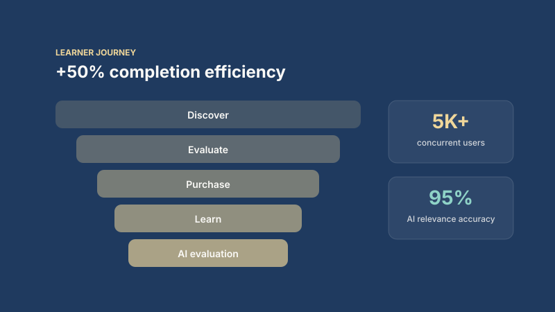

Exam aspirant
End customerStudent preparing for a competitive exam.
Goals
- Affordable practice
- Fast, useful feedback
Pain points
- Slow evaluation
- Confusing purchase flow
Needs: Instant, relevant feedback on every attempt.
Marketplace · 0 to 1
A high-volume EdTech platform built from zero to 5K+ concurrent users and 100K+ monthly transactions with AI-assisted evaluation.

Business context
As co-founder, the brief was to build a discover-to-purchase-to-serve journey from scratch that could hold up under exam-season spikes, while using AI to evaluate learner responses at scale with high relevance.
My role
Owned end-to-end product strategy, PRDs and roadmap. Ran prioritisation from funnel dashboards and experiments, and partnered with engineering on API design, retry handling and failure monitoring for AI pipelines.
Product strategy
Tech architecture
An Angular front end talks to FastAPI microservices over PostgreSQL. Orders, payments and content delivery are separate services with retry handling. AI evaluation pipelines process learner submissions asynchronously with relevance monitoring and fallbacks.
Business impact
Completion efficiency across the discover-to-purchase-to-serve journey.
AI evaluations processed at 95% relevance accuracy.
Uptime at 5K+ concurrent users and 100K+ monthly transactions.
Friction fixes reduced support contacts per transaction.
Key decisions
System architecture
A microservices platform on FastAPI and PostgreSQL that scales horizontally for exam-season peaks, with AI evaluation running asynchronously so it never blocks purchase or learning.
Scroll sideways to see the full diagram on small screens.
Request lifecycle
Service roster
| Service | Responsibility | Guardrail |
|---|---|---|
| Catalogue | Search and course discovery | Cached for peak traffic |
| Orders and payments | Checkout and payment confirmation | Idempotent payment handling |
| Content delivery | Serves lessons and tests | CDN and horizontal scaling |
| Evaluation workers | Score learner submissions with AI | Async queue, retries, relevance threshold |
| Analytics | Funnel and experiment reporting | Single event schema |
Product research
As co-founder, research ran continuously through learner interviews, funnel data and experiments.
Personas
Student preparing for a competitive exam.
Needs: Instant, relevant feedback on every attempt.
Pays for the course on the student's behalf.
Needs: Clear progress reporting and simple payment.
Creates and sells course content.
Needs: AI-assisted evaluation and reliable delivery.
Handles learner queries.
Needs: Fewer failure points in the journey.
Insights to decisions
Drop-off clustered at checkout and first-use.
Product decisionSimplified purchase and onboarding lifted completion by 50%.
Feedback speed drove retention more than content volume.
Product decisionAsynchronous AI evaluation at 95% relevance.
Exam-season spikes caused most outages and tickets.
Product decisionHorizontal scaling and retry handling for 99.9% uptime.